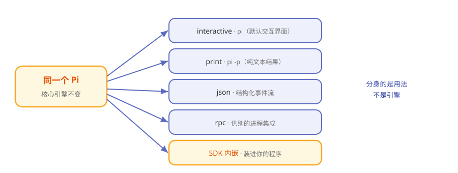

第11章 Pi 的分身术：四种模式与 SDK 内嵌¶
阅读提示 你一直用的是"交互模式"的 Pi。其实它有四种"形态"，还能作为 SDK 嵌进你自己的程序。本章讲全。约 8 分钟。
同一台车，四种开法¶
同一台车，可以自己开、可以让代驾开、可以挂上拖车拉货、可以接上电脑自动驾驶。车还是那台车，用法不同而已。
Pi 也一样。你平时敲 pi 进入的交互界面，只是它最常用的一种形态。它一共有四种运行模式，外加一条"内嵌"路径。
四种模式一览¶
表11-1 Pi 的四种模式
| 模式 | 怎么触发 | 长什么样 | 适合 |
|---|---|---|---|
| interactive | pi（默认） |
完整终端界面，能聊天能 /命令 | 人坐在跟前用 |
pi -p "…" |
问一句答一句，纯文本 | 脚本里要个结果 | |
| json | --mode json |
输出结构化 JSON 事件流 | 程序要解析过程 |
| rpc | --mode rpc |
stdin/stdout 上的 JSONL 协议 | 别的进程来集成 |
图11-1 同一台 Pi 的五种用法

前三种：从"给人看"到"给机器看"¶
interactive、print、json 这三种，是"输出越来越结构化"的一条线：
- interactive——给人看的，有界面、有颜色、有快捷键。
- print——只给你最终那段文字，方便管道处理（
pi -p "..." > out.txt）。 - json——把第 5 章那串事件，原样以 JSON 吐出来，程序想怎么解析都行。
rpc：把 Pi 当一个"服务"¶
rpc 模式更进一步：Pi 在 stdin/stdout 上跑一套 JSONL 协议，另一个进程可以像操纵服务一样操纵它——发指令、收事件。这是"把 Pi 嵌进别的系统"的通道。
第五条路：SDK 内嵌¶
如果你干脆在写自己的 Node 程序，想直接把 Pi 的能力装进去，可以不经过命令行，直接用 SDK：
const runtime = ModelRuntime.create(...)
const session = createAgentSession(...)
await session.prompt("...")
三行意思：建运行时 → 建会话 → 提问。官方带了 13 个递进的 SDK 教程，从最小例子到完全掌控，正好当教材。
表11-2 五种用法怎么选
| 你想…… | 用 |
|---|---|
| 坐下来跟它干活 | interactive |
| 脚本里要一句回答 | |
| 程序要解析全过程 | json |
| 让别的进程驱动它 | rpc |
| 把 agent 能力装进自己的应用 | SDK |
🧪 本章实验¶
实验 11-1 ★｜体验 print 模式 目标：感受非交互形态。 步骤：运行
pi -p "用一句话介绍你自己"。 验收：只蹦出回答，没有交互界面。实验 11-2 ★★｜看一眼 JSON 事件流 目标：亲眼看到第 5 章的事件。 步骤：
pi --mode json -p "hi"，观察输出。 验收：你能在输出里找到 message 和 turn 相关的字段。
🤔 思考题¶
- ★ 为什么"同一套核心"要配这么多种模式？
- ★★ print 和 json 的区别，本质上是给谁看的？
- ★★ 用 SDK 内嵌和用 rpc 集成，各自适合什么场景？
📝 小结¶
- 四种模式——interactive / print / json / rpc
- 一条递进线——从给人看到给机器看
- rpc 把 Pi 当服务——别的进程经 JSONL 驱动它
- SDK 是第五条路——三行内嵌进自己的 Node 程序
- 核心只有一个——分身的是用法，不是引擎
下一章看 Pi 的"脸"——那块从不闪烁的终端屏幕是怎么画出来的。➡️ 第12章 终端里的艺术：Pi 的屏幕是怎么画的